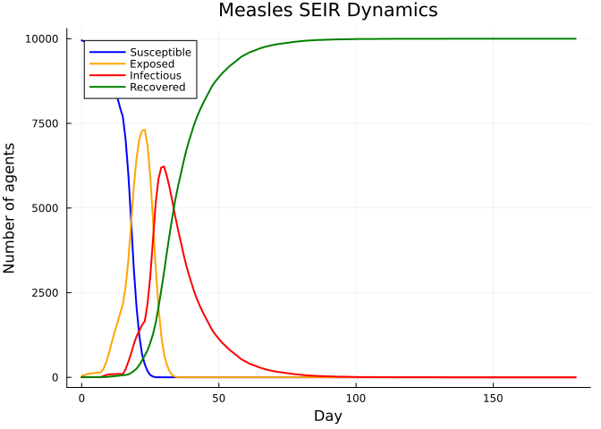
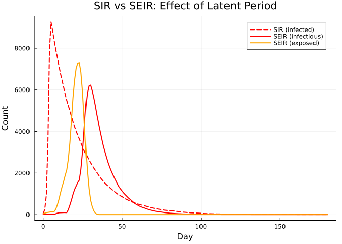
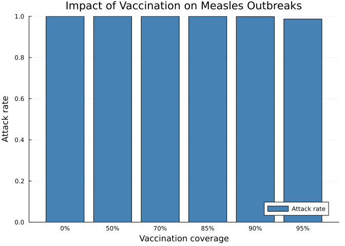
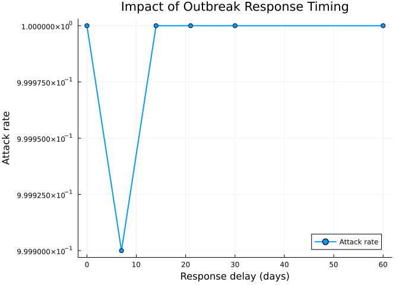

Measles Outbreak Modeling with SEIR
Simon Frost
- Overview
- A basic measles SEIR model
- Epidemic dynamics
- Key epidemic metrics
- SIR vs SEIR comparison
- Vaccination scenarios
- Outbreak response timing
- Summary
Overview
Measles is a highly infectious viral disease with a basic reproduction number (R₀) of 12–18. It follows an SEIR (Susceptible → Exposed → Infectious → Recovered) pattern:
- Incubation (exposed) period: ~8–12 days
- Infectious period: ~6–11 days
- Transmission probability: Very high given contact
In this vignette, we model a measles outbreak using the SEIR disease model in Starsim.jl, compare dynamics with and without vaccination, and explore outbreak response timing.
A basic measles SEIR model
using Starsim
using Plots
# Measles parameters (CDC estimates)
sim = Sim(
n_agents = 10_000,
networks = RandomNet(n_contacts=15), # high contact rate for measles
diseases = SEIR(
name = :measles,
beta = 0.3, # high transmission rate
dur_exp = 8.0, # 8 day incubation
dur_inf = 11.0, # 11 day infectious period
init_prev = 0.001, # seed with 10 cases
),
dt = 1.0,
stop = 180.0, # 6 months
rand_seed = 42,
verbose = 0,
)
run!(sim)Sim(10000 agents, 0.0→180.0, dt=1.0, nets=1, dis=1, status=complete)Epidemic dynamics
n_sus = get_result(sim, :measles, :n_susceptible)
n_exp = get_result(sim, :measles, :n_exposed)
n_inf = get_result(sim, :measles, :n_infected)
n_rec = get_result(sim, :measles, :n_recovered)
tvec = 0:length(n_sus)-1
plot(tvec, n_sus, label="Susceptible", lw=2, color=:blue)
plot!(tvec, n_exp, label="Exposed", lw=2, color=:orange)
plot!(tvec, n_inf, label="Infectious", lw=2, color=:red)
plot!(tvec, n_rec, label="Recovered", lw=2, color=:green)
xlabel!("Day")
ylabel!("Number of agents")
title!("Measles SEIR Dynamics")
Key epidemic metrics
prev = get_result(sim, :measles, :prevalence)
println("Peak prevalence: $(round(maximum(prev), digits=4))")
println("Peak day: $(argmax(prev))")
println("Attack rate: $(round(n_rec[end] / 10_000, digits=4))")
println("Final susceptible: $(Int(n_sus[end]))")Peak prevalence: 0.9023
Peak day: 25
Attack rate: 1.0
Final susceptible: 0SIR vs SEIR comparison
The exposed (latent) period in SEIR delays the epidemic peak and reduces its height compared to SIR with the same effective transmission rate.
# SIR comparison (same beta, combine dur_exp + dur_inf for total duration)
sim_sir = Sim(
n_agents = 10_000,
networks = RandomNet(n_contacts=15),
diseases = SIR(
name = :measles_sir,
beta = 0.3,
dur_inf = 19.0, # dur_exp + dur_inf
init_prev = 0.001,
),
dt = 1.0, stop = 180.0, rand_seed = 42, verbose = 0,
)
run!(sim_sir)
n_inf_sir = get_result(sim_sir, :measles_sir, :n_infected)
n_inf_seir = get_result(sim, :measles, :n_infected)
n_exp_seir = get_result(sim, :measles, :n_exposed)
plot(0:length(n_inf_sir)-1, n_inf_sir, label="SIR (infected)", lw=2, color=:red, ls=:dash)
plot!(0:length(n_inf_seir)-1, n_inf_seir, label="SEIR (infectious)", lw=2, color=:red)
plot!(0:length(n_exp_seir)-1, n_exp_seir, label="SEIR (exposed)", lw=2, color=:orange)
xlabel!("Day")
ylabel!("Count")
title!("SIR vs SEIR: Effect of Latent Period")
Vaccination scenarios
Compare outbreak outcomes with different vaccination coverage levels.
attack_rates = Float64[]
coverages = [0.0, 0.5, 0.7, 0.85, 0.9, 0.95]
for cov in coverages
sim_v = Sim(
n_agents = 10_000,
networks = RandomNet(n_contacts=15),
diseases = SEIR(
name = :measles,
beta = 0.3,
dur_exp = 8.0,
dur_inf = 11.0,
init_prev = 0.001,
),
dt = 1.0, stop = 180.0, rand_seed = 42, verbose = 0,
)
# Initialize
init!(sim_v)
# Pre-vaccinate: move fraction of susceptibles directly to recovered
active = sim_v.people.auids.values
disease = sim_v.diseases[:measles]
sus_uids = [u for u in active if disease.infection.susceptible.raw[u]]
n_vax = Int(round(cov * length(sus_uids)))
if n_vax > 0
vax_uids = UIDs(sus_uids[1:n_vax])
disease.infection.susceptible[vax_uids] = false
disease.recovered[vax_uids] = true
end
# Run remaining simulation
run!(sim_v)
ar = get_result(sim_v, :measles, :n_recovered)[end] / 10_000
push!(attack_rates, ar)
println("Coverage $(Int(cov*100))%: attack rate = $(round(ar, digits=4))")
end
bar(string.(Int.(coverages .* 100)) .* "%", attack_rates,
label="Attack rate", color=:steelblue, ylabel="Attack rate",
xlabel="Vaccination coverage", title="Impact of Vaccination on Measles Outbreaks")Coverage 0%: attack rate = 1.0
Coverage 50%: attack rate = 1.0
Coverage 70%: attack rate = 1.0
Coverage 85%: attack rate = 0.9998
Coverage 90%: attack rate = 0.9987
Coverage 95%: attack rate = 0.9872
Outbreak response timing
How quickly must we respond to an outbreak? We simulate triggering a vaccination campaign at different days after the first detected case.
response_days = [0, 7, 14, 21, 30, 60]
attack_rates_response = Float64[]
for delay in response_days
sim_r = Sim(
n_agents = 10_000,
networks = RandomNet(n_contacts=15),
diseases = SEIR(
name = :measles,
beta = 0.3,
dur_exp = 8.0,
dur_inf = 11.0,
init_prev = 0.001,
),
dt = 1.0, stop = 180.0, rand_seed = 42, verbose = 0,
)
init!(sim_r)
# Run until response day, then vaccinate 80% of remaining susceptibles
for ti in 1:sim_r.t.npts
sim_r.loop.ti = ti
for entry in sim_r.loop.steps
entry.fn(sim_r)
end
if ti == delay
disease = sim_r.diseases[:measles]
sus = [u for u in sim_r.people.auids.values if disease.infection.susceptible.raw[u]]
n_vax = Int(round(0.8 * length(sus)))
if n_vax > 0
vax_uids = UIDs(sus[1:n_vax])
disease.infection.susceptible[vax_uids] = false
disease.recovered[vax_uids] = true
end
end
end
sim_r.complete = true
for (_, mod) in all_modules(sim_r)
finalize!(mod)
end
ar = get_result(sim_r, :measles, :n_recovered)[end] / 10_000
push!(attack_rates_response, ar)
println("Response at day $delay: attack rate = $(round(ar, digits=4))")
end
plot(response_days, attack_rates_response, marker=:circle, lw=2,
label="Attack rate", xlabel="Response delay (days)",
ylabel="Attack rate", title="Impact of Outbreak Response Timing")Response at day 0: attack rate = 1.0
Response at day 7: attack rate = 0.9999
Response at day 14: attack rate = 1.0
Response at day 21: attack rate = 1.0
Response at day 30: attack rate = 1.0
Response at day 60: attack rate = 1.0
Summary
- Measles’ high R₀ requires very high vaccination coverage (\>95%) to prevent outbreaks
- The SEIR latent period delays peak compared to SIR
- Early outbreak response dramatically reduces attack rates
- Even a 1-week delay in response can significantly increase final outbreak size